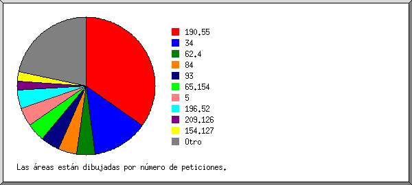
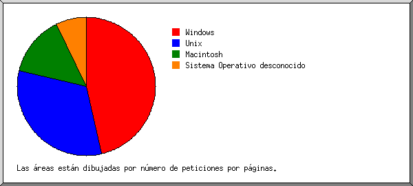
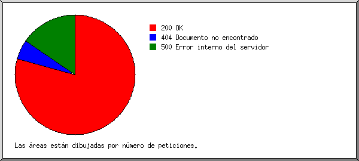
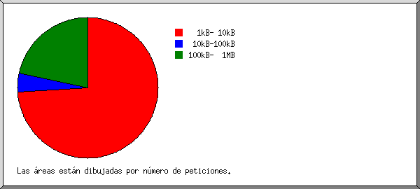
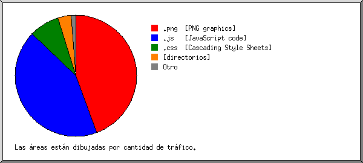
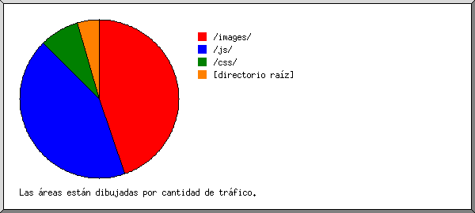
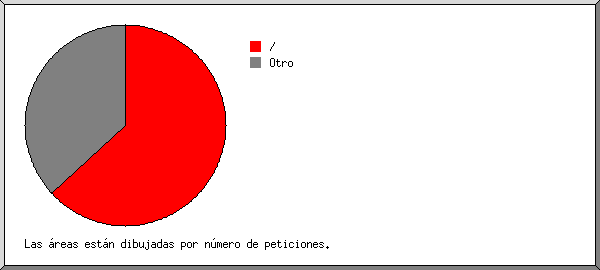

Estadísticas del servidor Web de dalpedidos.com
Estadísticas del servidor Web de dalpedidos.com
Programa iniciado a las Jue/01/Ago/2019 10:02 am.
Análisis de peticiones del Mar/30/Jul/2019 3:03 pm al Jue/01/Ago/2019 7:49 am (1.70 días).
Estadísticas del servidor Web de dalpedidos.comPrograma iniciado a las Jue/01/Ago/2019 10:02 am.
Análisis de peticiones del Mar/30/Jul/2019 3:03 pm al Jue/01/Ago/2019 7:49 am (1.70 días).
(Ir a: Arriba | Resumen general | Informe mensual | Resumen diario | Resumen horario | Informe de dominios | Informe de organización | Informe de errores de remitentes | Informe de sitios remitentes | Informe de navegadores | Resumen de navegadores | Informe de Sistemas Operativos | Informe de códigos de estado | Informe de tamaño de archivos | Informe de Tipos de Archivo | Informe de Directorios | Informe de peticiones)
Peticiones exitosas: 46
Promedio de peticiones exitosas por día: 26
Peticiones exitosas por página: 29
Promedio de peticiones exitosas por página por día: 16
Peticiones no logradas: 12
Archivos diferentes solicitados: 9
Sistemas diferentes atendidos: 24
Transferencia total: 3.01 megabytes
Promedio de transferencia por día: 1.77 megabytes
(Ir a: Arriba | Resumen general | Informe mensual | Resumen diario | Resumen horario | Informe de dominios | Informe de organización | Informe de errores de remitentes | Informe de sitios remitentes | Informe de navegadores | Resumen de navegadores | Informe de Sistemas Operativos | Informe de códigos de estado | Informe de tamaño de archivos | Informe de Tipos de Archivo | Informe de Directorios | Informe de peticiones)
Cada unidad ( ) representa 1 petición de una página.
) representa 1 petición de una página.
| mes | No. pet. | Págs. | |
|---|---|---|---|
| Jul 2019 | 20 | 20 |   |
| Ago 2019 | 26 | 9 |  |
Mes de mayor tráfico: Jul 2019 (20 peticiones por páginas).
(Ir a: Arriba | Resumen general | Informe mensual | Resumen diario | Resumen horario | Informe de dominios | Informe de organización | Informe de errores de remitentes | Informe de sitios remitentes | Informe de navegadores | Resumen de navegadores | Informe de Sistemas Operativos | Informe de códigos de estado | Informe de tamaño de archivos | Informe de Tipos de Archivo | Informe de Directorios | Informe de peticiones)
Cada unidad () representa 1 petición de una página.
| día | No. pet. | Págs. | |
|---|---|---|---|
| Dom | 0 | 0 | |
| Lun | 0 | 0 | |
| Mar | 9 | 9 | |
| Mié | 11 | 11 |  |
| Jue | 26 | 9 | |
| Vie | 0 | 0 | |
| Sáb | 0 | 0 |
(Ir a: Arriba | Resumen general | Informe mensual | Resumen diario | Resumen horario | Informe de dominios | Informe de organización | Informe de errores de remitentes | Informe de sitios remitentes | Informe de navegadores | Resumen de navegadores | Informe de Sistemas Operativos | Informe de códigos de estado | Informe de tamaño de archivos | Informe de Tipos de Archivo | Informe de Directorios | Informe de peticiones)
Cada unidad () representa 1 petición de una página.
| hr | No. pet. | Págs. | |
|---|---|---|---|
| 0 | 0 | 0 | |
| 1 | 0 | 0 | |
| 2 | 0 | 0 | |
| 3 | 23 | 8 | |
| 4 | 3 | 2 | |
| 5 | 0 | 0 | |
| 6 | 4 | 3 | |
| 7 | 2 | 2 | |
| 8 | 0 | 0 | |
| 9 | 0 | 0 | |
| 10 | 1 | 1 | |
| 11 | 0 | 0 | |
| 12 | 0 | 0 | |
| 13 | 0 | 0 | |
| 14 | 0 | 0 | |
| 15 | 6 | 6 | |
| 16 | 1 | 1 | |
| 17 | 0 | 0 | |
| 18 | 0 | 0 | |
| 19 | 0 | 0 | |
| 20 | 1 | 1 | |
| 21 | 4 | 4 | |
| 22 | 1 | 1 | |
| 23 | 0 | 0 |
(Ir a: Arriba | Resumen general | Informe mensual | Resumen diario | Resumen horario | Informe de dominios | Informe de organización | Informe de errores de remitentes | Informe de sitios remitentes | Informe de navegadores | Resumen de navegadores | Informe de Sistemas Operativos | Informe de códigos de estado | Informe de tamaño de archivos | Informe de Tipos de Archivo | Informe de Directorios | Informe de peticiones)
Listado de los dominios, ordenados por cantidad de tráfico.
| No. pet. | %bytes | dominio |
|---|---|---|
| 46 | 100% | [direcciones numéricas sin resolver] |
(Ir a: Arriba | Resumen general | Informe mensual | Resumen diario | Resumen horario | Informe de dominios | Informe de organización | Informe de errores de remitentes | Informe de sitios remitentes | Informe de navegadores | Resumen de navegadores | Informe de Sistemas Operativos | Informe de códigos de estado | Informe de tamaño de archivos | Informe de Tipos de Archivo | Informe de Directorios | Informe de peticiones)

Listado de las 20 primeras organizaciones por número de peticiones, ordenadas por número de peticiones.
| No. pet. | %bytes | organización |
|---|---|---|
| 16 | 39.09% | 190.55 |
| 6 | 47.59% | 34 |
| 2 | 0.25% | 62.4 |
| 2 | 0.24% | 84 |
| 2 | 0.18% | 93 |
| 2 | 10.81% | 65.154 |
| 2 | 0.22% | 5 |
| 2 | 0.24% | 196.52 |
| 1 | 0.13% | 209.126 |
| 1 | 0.11% | 154.127 |
| 1 | 0.11% | 165.227 |
| 1 | 0.11% | 51 |
| 1 | 0.11% | 168.235 |
| 1 | 0.13% | 52 |
| 1 | 0.09% | 18 |
| 1 | 0.13% | 37 |
| 1 | 0.13% | 188.166 |
| 1 | 0.13% | 212.92 |
| 1 | 0.13% | 212.83 |
| 1 | 0.09% | 3 |
(Ir a: Arriba | Resumen general | Informe mensual | Resumen diario | Resumen horario | Informe de dominios | Informe de organización | Informe de errores de remitentes | Informe de sitios remitentes | Informe de navegadores | Resumen de navegadores | Informe de Sistemas Operativos | Informe de códigos de estado | Informe de tamaño de archivos | Informe de Tipos de Archivo | Informe de Directorios | Informe de peticiones)
Listado de los URLs de remitentes, ordenados por número de peticiones no logradas.
| No. pet. | URL |
|---|---|
| 9 | https://www.dalpedidos.com/home |
(Ir a: Arriba | Resumen general | Informe mensual | Resumen diario | Resumen horario | Informe de dominios | Informe de organización | Informe de errores de remitentes | Informe de sitios remitentes | Informe de navegadores | Resumen de navegadores | Informe de Sistemas Operativos | Informe de códigos de estado | Informe de tamaño de archivos | Informe de Tipos de Archivo | Informe de Directorios | Informe de peticiones)

Listado de los sitios remitentes, ordenados por número de peticiones.
| No. pet. | sitio |
|---|---|
| 16 | https://www.dalpedidos.com/ |
| 11 | https://dalpedidos.com/ |
(Ir a: Arriba | Resumen general | Informe mensual | Resumen diario | Resumen horario | Informe de dominios | Informe de organización | Informe de errores de remitentes | Informe de sitios remitentes | Informe de navegadores | Resumen de navegadores | Informe de Sistemas Operativos | Informe de códigos de estado | Informe de tamaño de archivos | Informe de Tipos de Archivo | Informe de Directorios | Informe de peticiones)

Listado de los navegadores que representan, por lo menos, 1 petición de una página, ordenados por número de peticiones por páginas.
| No. pet. | Págs. | Navegador |
|---|---|---|
| 17 | 6 | Mozilla/5.0 (Windows NT 10.0; Win64; x64) AppleWebKit/537.36 (KHTML, like Gecko) Chrome/75.0.3770.142 Safari/537.36 |
| 3 | 3 | Mozilla/5.0 (X11; Ubuntu; Linux x86_64; rv:58.0) Gecko/20100101 Firefox/58.0 |
| 2 | 2 | Mozilla/5.0 (iPhone; CPU iPhone OS 12_2 like Mac OS X) AppleWebKit/605.1.15 (KHTML, like Gecko) Version/12.1 Mobile/15E148 Safari/604.1 |
| 2 | 2 | Mozilla/5.0 (Windows NT 10.0; Win64; x64) AppleWebKit/537.36 (KHTML, like Gecko) Chrome/75.0.3770.100 Safari/537.36 |
| 2 | 2 | Mozilla/5.0 (Linux; Android 4.2.1; en-us; Nexus 5 Build/JOP40D) AppleWebKit/535.19 (KHTML, like Gecko; googleweblight) Chrome/38.0.1025.166 Mobile Safari/535.19 |
| 1 | 1 | Mozilla/5.0 (Windows NT 6.1; WOW64) AppleWebKit/534+ (KHTML, like Gecko) BingPreview/1.0b |
| 1 | 1 | Mozilla/5.0 |
| 6 | 1 | Mozilla/5.0 (X11; Linux x86_64) AppleWebKit/602.1 (KHTML, like Gecko) splash Version/9.0 Safari/602.1 |
| 1 | 1 | Go-http-client/1.1 |
| 1 | 1 | Mozilla/5.0 (Windows NT 10.0; Win64; x64) AppleWebKit/537.36 (KHTML, like Gecko) Chrome/74.0.3729.169 Safari/537.36 |
| 1 | 1 | Mozilla/5.0 (iPhone; CPU iPhone OS 12_3_1 like Mac OS X) AppleWebKit/605.1.15 (KHTML, like Gecko) Mobile/15E148 |
| 1 | 1 | Mozilla/5.0 (X11; Linux x86_64) AppleWebKit/537.36 (KHTML, like Gecko) Chrome/58.0.3029.110 Safari/537.36 |
| 1 | 1 | Mozilla/5.0 (Windows NT 10.0; WOW64) AppleWebKit/537.36 (KHTML, like Gecko) Chrome/20.0.1132.57 Safari/537.36 |
| 1 | 1 | Mozilla/5.0 (Macintosh; Intel Mac OS X 10.12; rv:52.0) Gecko/20100101 Firefox/52.0 |
| 2 | 1 | Mozilla/5.0 (Windows NT 6.1; Win64; x64) AppleWebKit/537.36 (KHTML, like Gecko) Chrome/73.0.3683.75 Safari/537.36 |
| 1 | 1 | Mozilla/5.0 (Windows NT 10.0; Win64; x64) AppleWebKit/537.36 (KHTML, like Gecko) Chrome/60.0.3112.113 Safari/537.36 |
| 1 | 1 | Mozilla/5.0 (Linux; Android 9; Mi A1 Build/PKQ1.180917.001; wv) AppleWebKit/537.36 (KHTML, like Gecko) Version/4.0 Chrome/74.0.3729.157 Mobile Safari/537.36 |
| 1 | 1 | Mozilla/5.0 (Linux; U; Android 8.1.0; zh-CN; EML-AL00 Build/HUAWEIEML-AL00) AppleWebKit/537.36 (KHTML, like Gecko) Version/4.0 Chrome/57.0.2987.108 baidu.sogo.uc.UCBrowser/11.9.4.974 UWS/2.13.1.48 Mobile Safari/537.36 AliApp(DingTalk/4.5.11) com.alibaba.android.rimet/10487439 Channel/227200 language/zh-CN |
(Ir a: Arriba | Resumen general | Informe mensual | Resumen diario | Resumen horario | Informe de dominios | Informe de organización | Informe de errores de remitentes | Informe de sitios remitentes | Informe de navegadores | Resumen de navegadores | Informe de Sistemas Operativos | Informe de códigos de estado | Informe de tamaño de archivos | Informe de Tipos de Archivo | Informe de Directorios | Informe de peticiones)

Listado de los navegadores que representan, por lo menos, 1 petición de una página, ordenados por número de peticiones por páginas.
| no. | No. pet. | Págs. | Navegador |
|---|---|---|---|
| 1 | 37 | 20 | Safari |
| 27 | 15 | Safari/537 | |
| 2 | 2 | Safari/535 | |
| 2 | 2 | Safari/604 | |
| 6 | 1 | Safari/602 | |
| 2 | 4 | 4 | Firefox |
| 3 | 3 | Firefox/58 | |
| 1 | 1 | Firefox/52 | |
| 3 | 3 | 3 | Mozilla |
| 4 | 1 | 1 | Go-http-client |
| 1 | 1 | Go-http-client/1 |
(Ir a: Arriba | Resumen general | Informe mensual | Resumen diario | Resumen horario | Informe de dominios | Informe de organización | Informe de errores de remitentes | Informe de sitios remitentes | Informe de navegadores | Resumen de navegadores | Informe de Sistemas Operativos | Informe de códigos de estado | Informe de tamaño de archivos | Informe de Tipos de Archivo | Informe de Directorios | Informe de peticiones)

Listado de los sistemas operativos, ordenados por número de peticiones por páginas.
| no. | No. pet. | Págs. | SO |
|---|---|---|---|
| 1 | 25 | 13 | Windows |
| 22 | 11 | Windows NT | |
| 3 | 2 | Windows desconocido | |
| 2 | 14 | 9 | Unix |
| 14 | 9 | Linux | |
| 3 | 4 | 4 | Macintosh |
| 4 | 2 | 2 | Sistema Operativo desconocido |
(Ir a: Arriba | Resumen general | Informe mensual | Resumen diario | Resumen horario | Informe de dominios | Informe de organización | Informe de errores de remitentes | Informe de sitios remitentes | Informe de navegadores | Resumen de navegadores | Informe de Sistemas Operativos | Informe de códigos de estado | Informe de tamaño de archivos | Informe de Tipos de Archivo | Informe de Directorios | Informe de peticiones)

Listado de los códigos de estado, por orden numérico.
| No. pet. | cód. de estado |
|---|---|
| 46 | 200 OK |
| 3 | 404 Documento no encontrado |
| 9 | 500 Error interno del servidor |
(Ir a: Arriba | Resumen general | Informe mensual | Resumen diario | Resumen horario | Informe de dominios | Informe de organización | Informe de errores de remitentes | Informe de sitios remitentes | Informe de navegadores | Resumen de navegadores | Informe de Sistemas Operativos | Informe de códigos de estado | Informe de tamaño de archivos | Informe de Tipos de Archivo | Informe de Directorios | Informe de peticiones)

| tamaño | No. pet. | %bytes |
|---|---|---|
| 0 | 0 | |
| 1B- 10B | 0 | |
| 11B- 100B | 0 | |
| 101B- 1kB | 0 | |
| 1kB- 10kB | 34 | 4.38% |
| 10kB-100kB | 2 | 0.69% |
| 100kB- 1MB | 10 | 94.93% |
(Ir a: Arriba | Resumen general | Informe mensual | Resumen diario | Resumen horario | Informe de dominios | Informe de organización | Informe de errores de remitentes | Informe de sitios remitentes | Informe de navegadores | Resumen de navegadores | Informe de Sistemas Operativos | Informe de códigos de estado | Informe de tamaño de archivos | Informe de Tipos de Archivo | Informe de Directorios | Informe de peticiones)

Listado de las extensiones que representan, por lo menos, 0.1% del tráfico, ordenadas por cantidad de tráfico.
| No. pet. | %bytes | extensión |
|---|---|---|
| 5 | 44.46% | .png [PNG graphics] |
| 4 | 42.72% | .js [JavaScript code] |
| 2 | 8.10% | .css [Cascading Style Sheets] |
| 29 | 3.52% | [directorios] |
| 5 | 0.86% | [sin extensión] |
| 1 | 0.34% | .ico |
(Ir a: Arriba | Resumen general | Informe mensual | Resumen diario | Resumen horario | Informe de dominios | Informe de organización | Informe de errores de remitentes | Informe de sitios remitentes | Informe de navegadores | Resumen de navegadores | Informe de Sistemas Operativos | Informe de códigos de estado | Informe de tamaño de archivos | Informe de Tipos de Archivo | Informe de Directorios | Informe de peticiones)

Listado de los directorios que representan, por lo menos, 0.01% del tráfico, ordenados por cantidad de tráfico.
| No. pet. | %bytes | directorio |
|---|---|---|
| 6 | 44.80% | /images/ |
| 4 | 42.72% | /js/ |
| 2 | 8.10% | /css/ |
| 34 | 4.38% | [directorio raíz] |
(Ir a: Arriba | Resumen general | Informe mensual | Resumen diario | Resumen horario | Informe de dominios | Informe de organización | Informe de errores de remitentes | Informe de sitios remitentes | Informe de navegadores | Resumen de navegadores | Informe de Sistemas Operativos | Informe de códigos de estado | Informe de tamaño de archivos | Informe de Tipos de Archivo | Informe de Directorios | Informe de peticiones)

Listado de los archivos que representan, por lo menos, 20 peticiones, ordenados por número de peticiones.
| No. pet. | %bytes | última hora | archivo |
|---|---|---|---|
| 29 | 3.52% | 1/Ago/2019 7:49 am | / |
| 17 | 96.48% | 1/Ago/2019 6:14 am | [no listados: 7 archivos] |